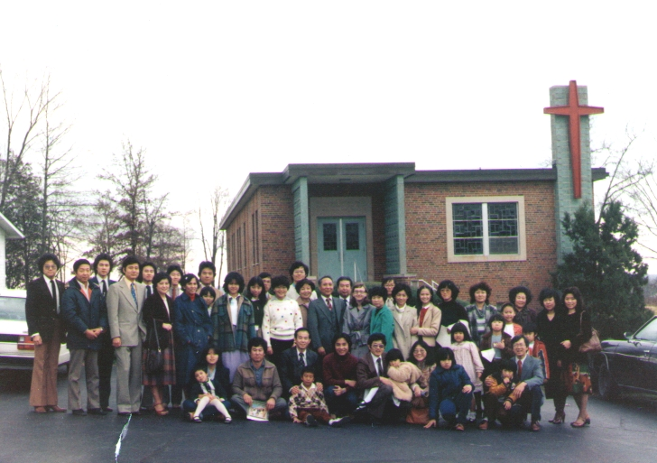
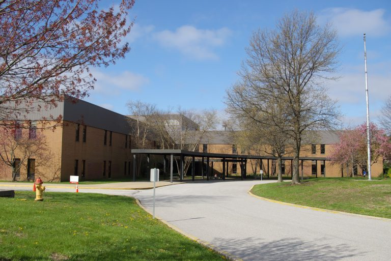
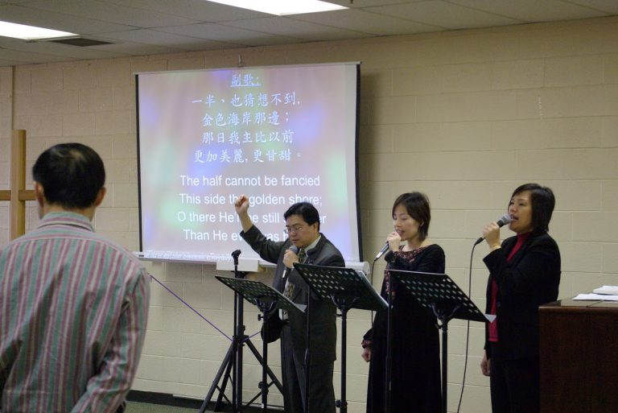
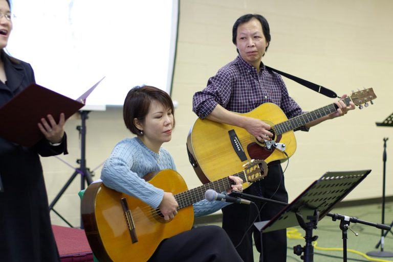
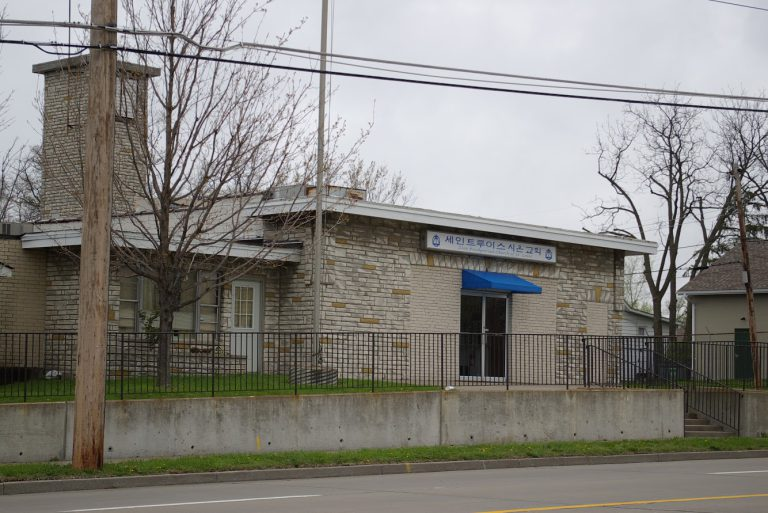
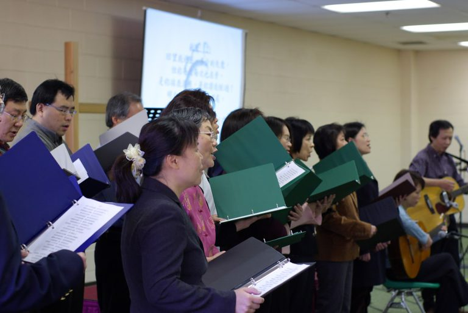
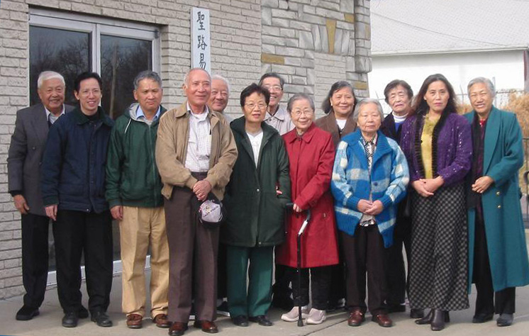
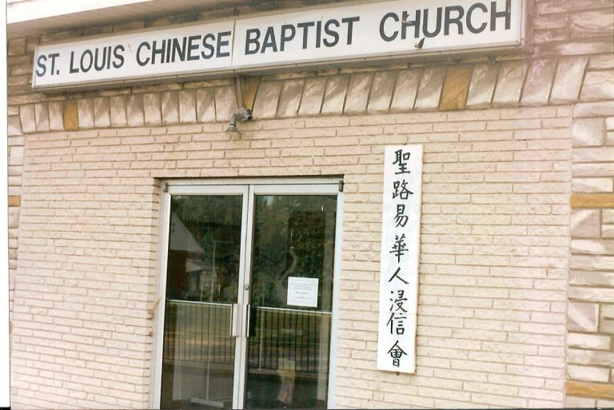
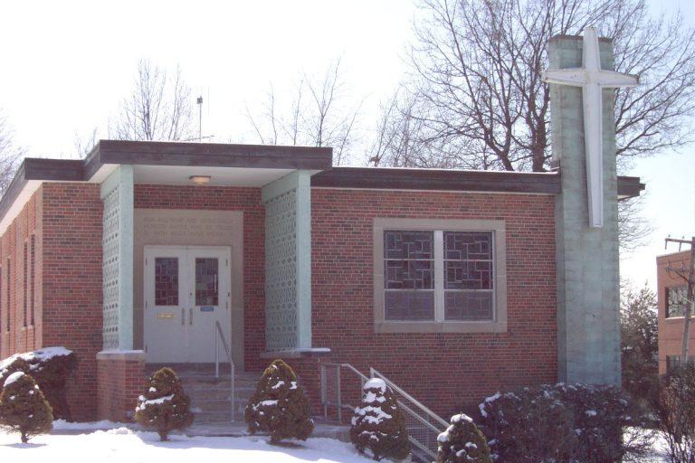
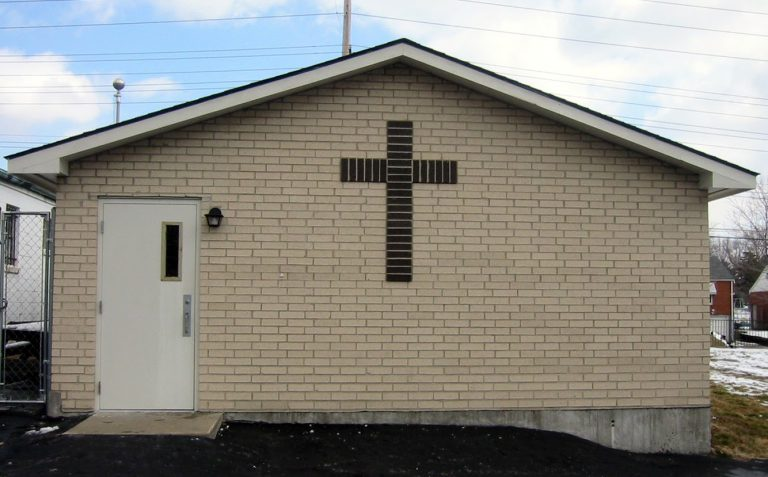
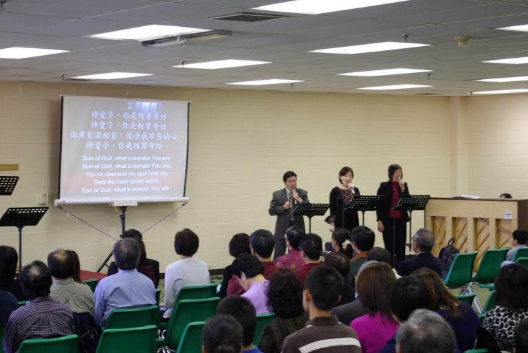
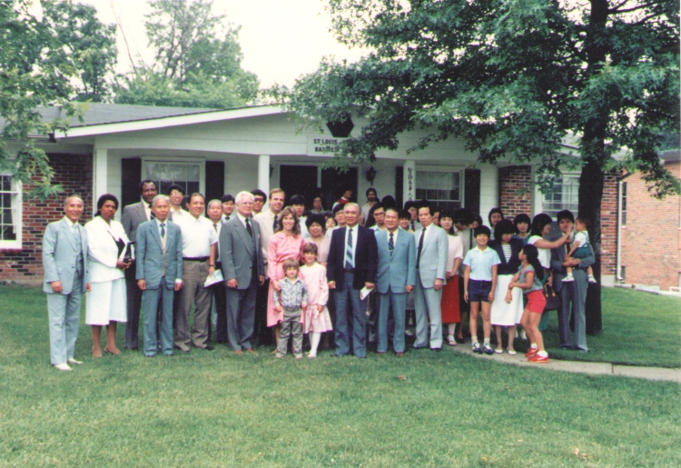
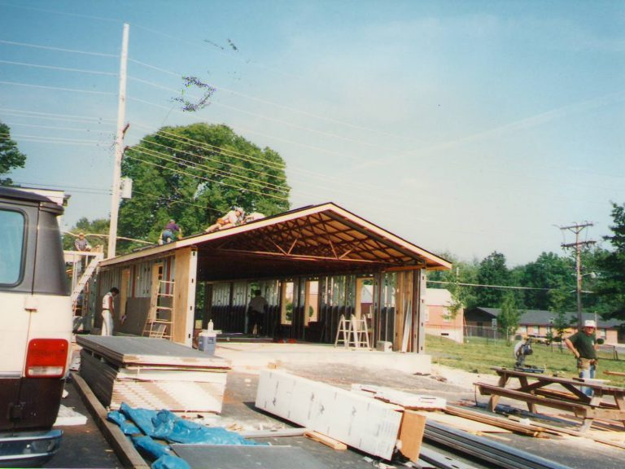
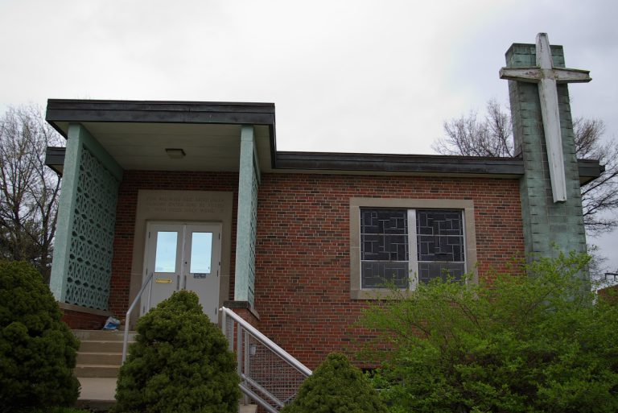
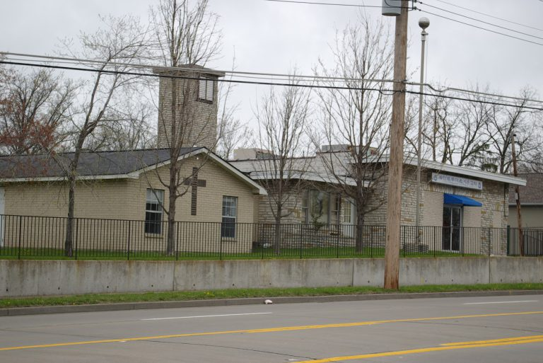
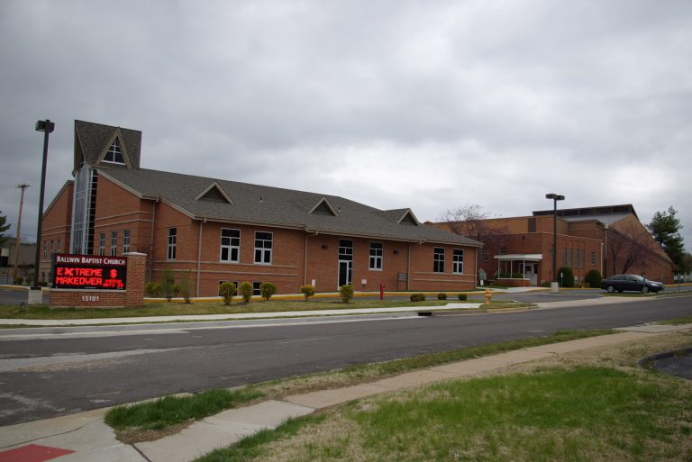
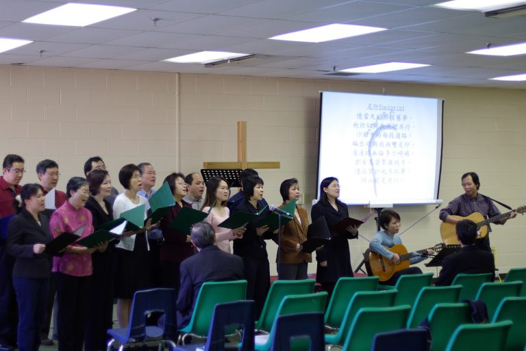
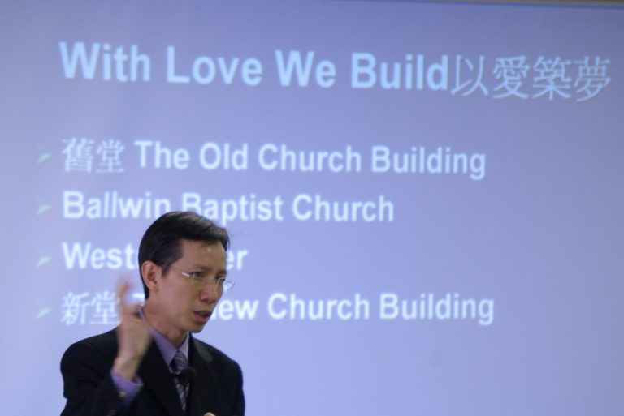
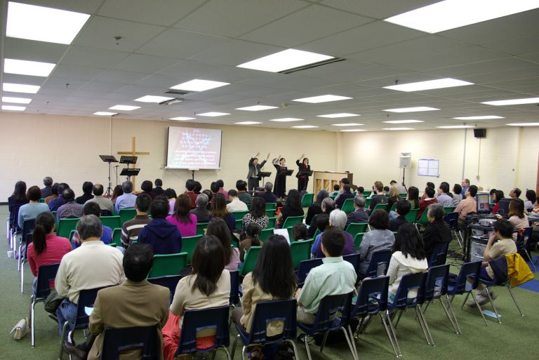
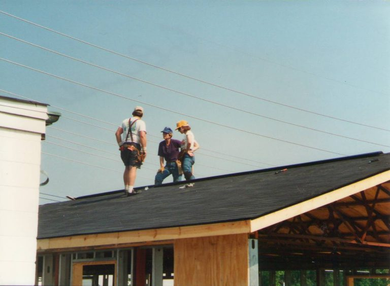
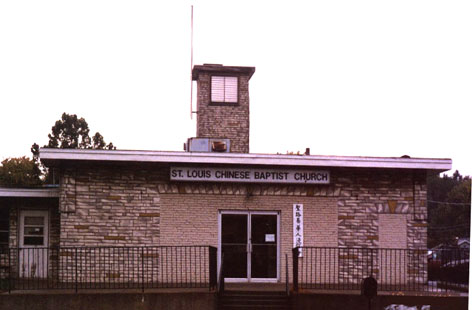
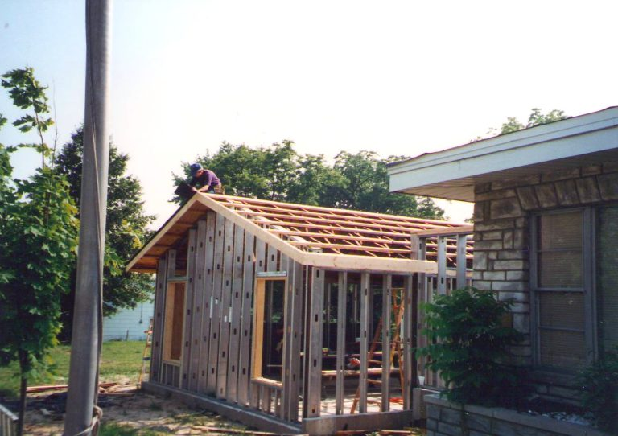
今天, 我們仰望上帝繼續的保守與祝福,
帶領我們繼續邁向「以愛建造,承接神的應許」。
Today, we are looking to God for His continued protection and blessing,
as He leads us forward to “Build with Love, Claim God’s Promise.”
歷程摘要 / Timeline
教會以中文查經事工開始。
Our church began as a Chinese
Bible study mission.
1979年5月6日正式註冊成立為聖路易華人浸信會。游天度牧師成為本會首任牧者。
On
May 6, 1979, the church was officially incorporated as St.
Louis Chinese Baptist Church, and Pastor Joseph Yu became the
first pastor.
靠著神的恩典，教會購買位於 Ashby Road
的第一棟屬於自己的教堂。
By God’s grace, the congregation
purchased its first church building on Ashby Road.
教會展開擴建工程，並於1997年完成四間新主日學教室的擴建與獻堂。黃應傑牧師於1996年12月成為第二位全職牧者。
The
church expanded the building, added four Sunday school
classrooms, and dedicated the completed project in 1997.
Pastor Ying-Kit Wong became the second full-time pastor in
December 1996.
因著向西郊華人社區傳福音的異象，教會出售 Ashby Road
教堂，暫時借用 Ballwin Baptist Church 及 Westminster Christian
Academy 的場地聚會。
With a vision to reach the growing
Chinese community in West County, the church sold the Ashby
Road property and temporarily worshiped at Ballwin Baptist
Church and Westminster Christian Academy.
神帶領教會在 St. Peters
找到新的會址。自2008年6月起，會眾一直在這座美麗的教堂敬拜神直到如今。
God
led the church to a new building in St. Peters, where the
congregation has worshiped since June 2008.
完整歷史 / Full History
中文
我們的教會於1978年2月以中文查經事工開始,並於1979年5月6日正式註冊成立為聖路易華人浸信會(St. Louis Chinese Baptist Church – STLCBC)。游天度牧師蒙主呼召,成為本會首任牧者,忠心牧養直到1995年退休。
在教會初期的數年間,我們借用了位於 Creve Coeur 的以馬內利浸信會地下室作為主日崇拜場所。不久,以馬內利浸信會解散,並將其教產捐贈給聖路易都會浸信聯會。因此,我們將崇拜地點遷至原教堂旁的一棟小牧師樓,因聯會將原教堂建築改為他們的辦公室。
1991年5月,靠著神的恩典,並在眾弟兄姊妹的代禱與信心中,我們在 Ashby Road(位於 Page大道以北、Lindbergh大道以東)購買了我們第一棟屬於自己的教堂。隨著會眾不斷增長,教堂空間很快便不敷使用。1996年,在本會弟兄姊妹及 Ferguson 第一浸信會的協助下,我們開始擴建教堂。同年12月,主呼召黃應傑牧師成為本會第二位全職牧者。經過數月的辛勞與奉獻,包括四間新主日學教室的擴建工程,終於在1997年5月完成並舉行獻堂典禮。
感謝主,自教堂擴建後,會眾持續穩定增長。2004 年秋季,神賜給我們一個共同的異象——向西郊迅速成長的華人社區傳福音。我們再次憑信心順服神的引導,決定出售 Ashby 教堂,遷往西區,展開一段如同以色列民般的信心之旅。
約有一年的時間,Ballwin 浸信會滿有主的愛心,慷慨讓我們使用他們的設施來舉行主日崇拜與主日學。2005 年,我們租用了 Westminster Christian Academy 西區校園二樓的空間和數間課室作為聚會場所,同時持續禱告,尋求神的帶領,為教會預備長期敬拜的地點。
神真的是信實的!祂垂聽了我們的禱告,親自引領我們在 St. Peters 找到新的會址。我們自2008年6月起,便在這座美麗的教堂中敬拜神,直到如今。
English
Our church began in February 1978 as a Chinese Bible study mission and was officially incorporated as the St. Louis Chinese Baptist Church (STLCBC) on May 6, 1979. Pastor Joseph Yu was called by the Lord to be our first pastor, faithfully shepherding the congregation until his retirement in 1995.
In the early years, we held our Sunday worship services in the borrowed basement of Emmanuel Baptist Church in Creve Coeur. Not long after, Emmanuel Baptist Church disbanded and donated their property to the St. Louis Metro Baptist Association. As a result, we moved our services into a small parsonage next to the original church building, which the association had converted into their new offices.
In May 1991, by God’s grace and through the faithful prayers and step of faith from our congregation, we purchased our first church building on Ashby Road—located north of Page Avenue and just east of Lindbergh Boulevard. As our congregation continued to grow, we soon outgrew the original building. In 1996, with the help of brothers and sisters from the First Baptist Church of Ferguson and the dedicated labor of our own members, we began an expansion project. That same December, the Lord called Pastor Ying-Kit Wong to serve as our second full-time pastor. After months of hard work and commitment, the extension—including four new Sunday school classrooms—was completed and dedicated in May 1997.
Praise the Lord! Since the expansion, our congregation continued to grow steadily. In the fall of 2004, with a shared vision to reach the rapidly growing Chinese community in West County, we once again stepped out in faith. The congregation made the bold decision to sell the Ashby Road church and relocate to West County, embarking on a journey of faith reminiscent of the Israelites.
For nearly a year, Ballwin Baptist Church generously allowed us to use their facilities for Sunday worship and Sunday school classes. In 2005, we began worshiping in a rented space on the second floor of Westminster Christian Academy’s West County campus, while continuing to pray earnestly for a permanent location where we could worship the Lord.
God is truly faithful! He heard our prayers and led us to a new church building in St. Peters. Since June 2008, we have been worshiping in this beautiful sanctuary—and we continue to praise Him for His abundant provision.